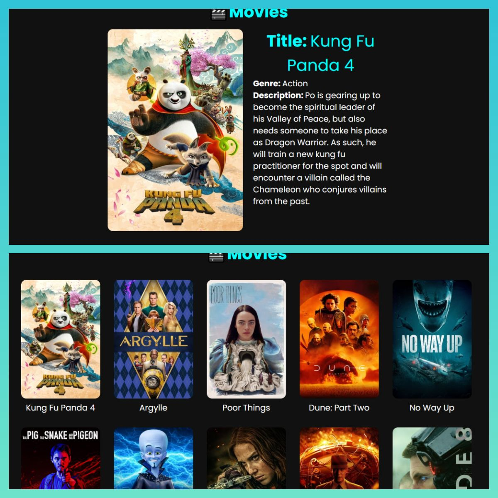
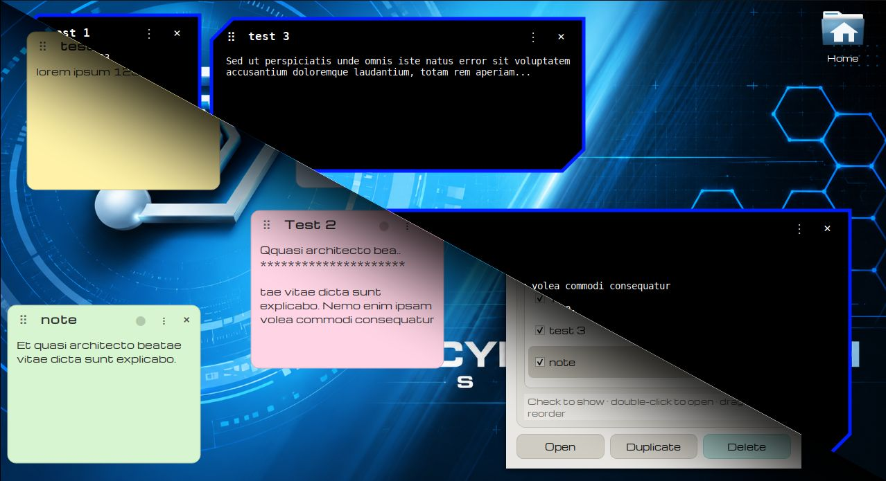
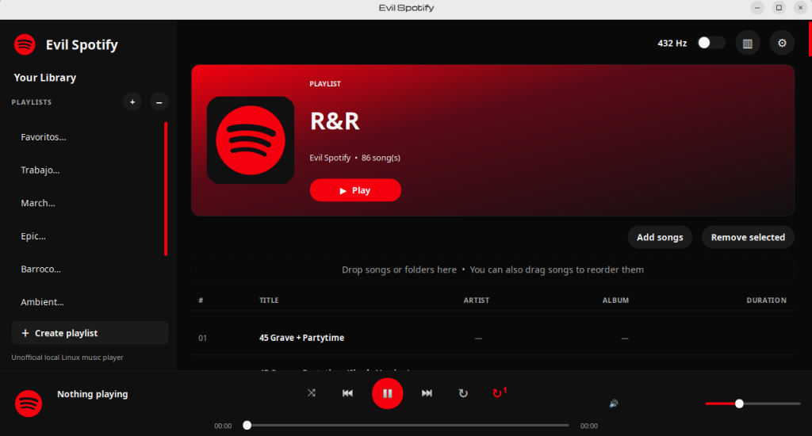

01
Magento / Hyvä
MageArray News Comment Template
A Hyvä-compatible frontend template for adding blog comments to MageArray News, adapted from the original module implementation.
- Magento 2
- PHP
- HTML
- Hyvä
01 Web systems / Commerce / Tools
Commerce platforms, custom integrations, and digital tools from backend logic to polished, responsive interfaces.
My strongest work sits at the point where backend behavior, commerce logic, and frontend detail meet.
I have five years of development experience, including more than two years focused on Magento 2 and Adobe Commerce. I work across custom PHP modules, MySQL data, JavaScript interactions, Hyvä storefronts, integrations, and responsive content systems.
Outside client work, I reverse-engineer formats, build desktop utilities, and turn long-standing technical gaps into tools people can actually use.
Magento 2 · Adobe Commerce · Hyvä · Luma
PHP · MySQL · Java · Spring Boot
JavaScript · Alpine.js · React · Tailwind CSS
Docker · Redis · RabbitMQ · OpenSearch
Python · Git · Linux
Blender · 3D asset workflows · Python tooling
Selected work spanning web development, commerce customization, reverse engineering, and desktop software.
Magento / Hyvä
A Hyvä-compatible frontend template for adding blog comments to MageArray News, adapted from the original module implementation.

React / API
A React experience for browsing current films, powered by live movie data from The Movie Database API.
Java / Business Logic
A Java application that calculates vacation allocation from employee tenure and organizational area rules.
Python / Reverse Engineering
A Windows toolkit for asset extraction, conversion, and mod management for a 2003 game with no public modding documentation. Includes custom Blender import/export plugins for game assets.

Linux / Desktop UX
A persistent Linux sticky-note application with themes, bilingual UI, window management, and automatic state restoration.

Audio / Desktop App
A local Linux music player with playlists, metadata, equalization, themes, favorites, and optional 432 Hz pitch processing.